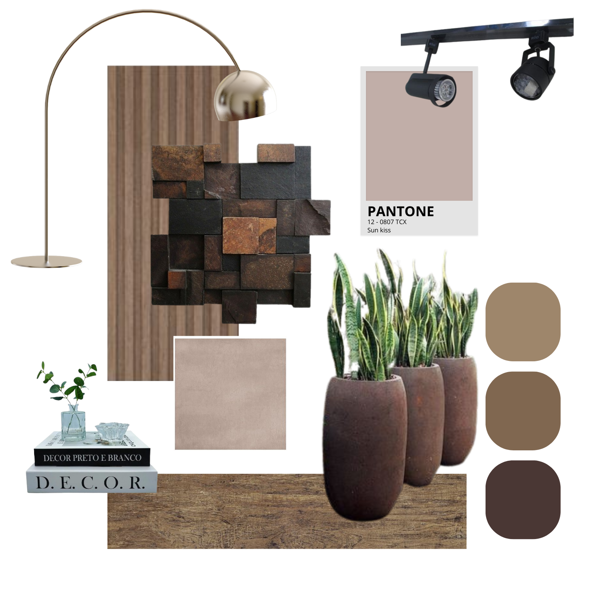
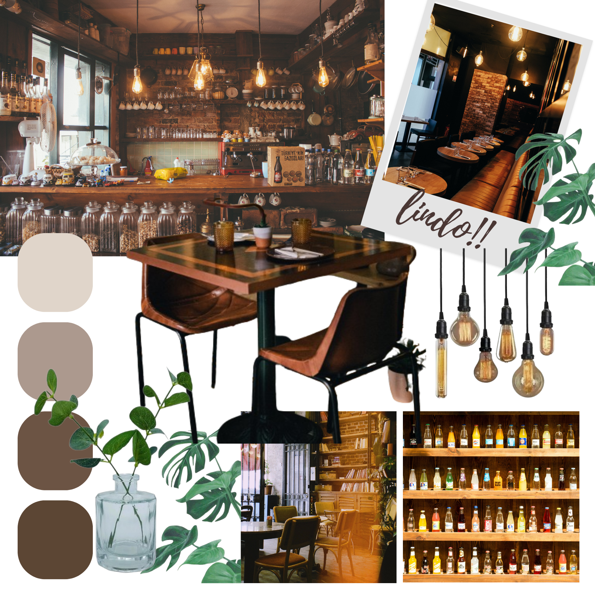
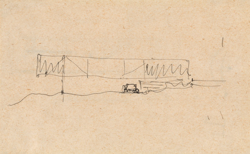
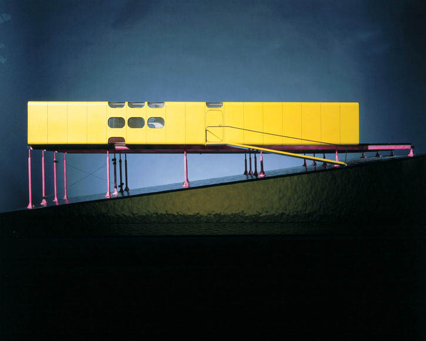
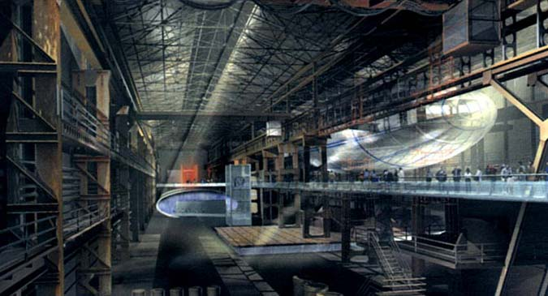
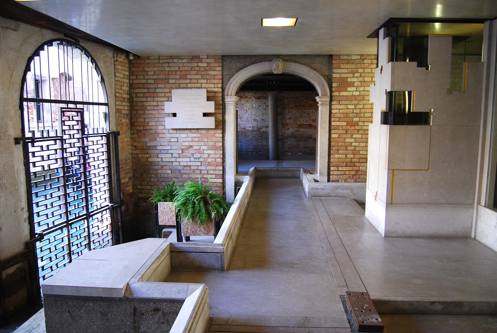
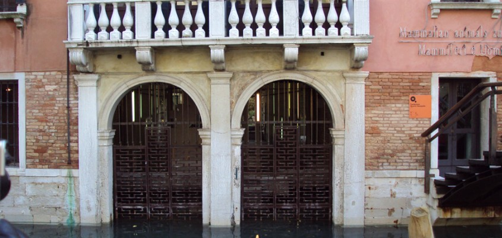
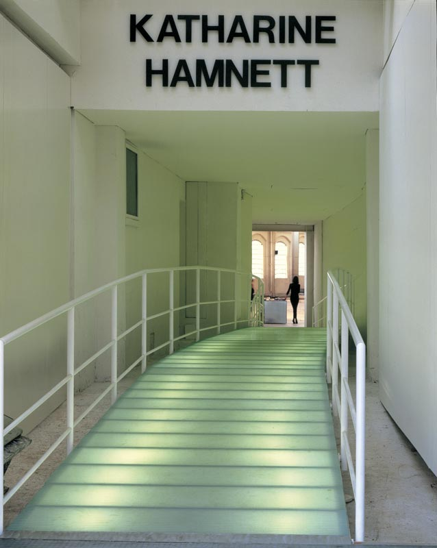
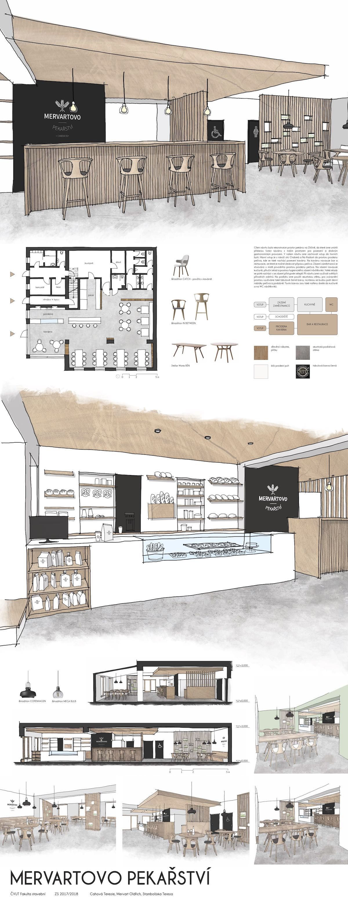

Para o projeto de um ponto de venda (PDV), é muito importante que o designer se lembre de que está projetando para o seu cliente e para os clientes do seu cliente. Portanto, como o espaço será utilizado por um grande número de usuários, cada um com suas particularidades e necessidades, o planejamento de projeto deve ser aprofundado e permitir o acesso universal, ou seja, o ambiente deve ter um design que possa ser utilizado por todos, sem a necessidade de adaptações.
Após a entrevista inicial, o fechamento de contrato e todos os outros detalhes mais burocráticos, chega o momento de pensar no projeto. Como visto nas unidades curriculares anteriores, o processo criativo começa com a elaboração de um painel chamado de moodboard. O moodboard, nesta etapa inicial do processo, auxiliará na construção conceitual da proposta por meio de referências visuais. Essa busca de repertório é feita por intermédio de bancos de imagem e de pesquisa de referências e projetos que já foram realizados e que ajudarão a criar um trabalho criativo e relevante.

Moodboard materialidade
Fonte: Senac EAD (2024)
Painel de composição de materiais que serão usados como referência para a utilização no projeto. Estão diagramados na prancha materiais como painel ripado em madeira, revestimento de pedra nos tons de marrom, piso cerâmico amadeirado, paleta de cores em tons de marrom variando do mais escuro para o mais claro, luminária de chão e trilho de iluminação com spots na cor preta.

Moodboard imagens de inspiração
Fonte: Senac EAD (2024)
Painel com montagem de várias imagens que servirão de inspiração para elaboração do projeto. Nele estão algumas imagens de espaços comerciais na paleta de cores em tons de marrom, espécies vegetais e luminárias.
Depois disso, é hora de partir para a etapa de estudo preliminar de projeto. No entanto, antes de sair rabiscando os croquis e colocando as ideias no papel, é preciso realizar um planejamento aprofundado. Para isso, analise pontos importantes, como local, clientela, concorrência, programa de necessidades. Confira a seguir:
O local
É importante estudar o local em que o ponto de venda será instalado, pois ele pode oferecer diversas oportunidades ou até limitadores para o projeto. Com fotografias e anotações, pode-se observar de maneira profunda o local. Entre as características mais importantes que requerem atenção e estudo estão:
⦁ A história do local: saber se, anteriormente, a edificação alocou outro negócio, se é uma edificação nova ou antiga. Aproveitar essa história pode ser interessante no conceito de design.
⦁ O tráfego e a acessibilidade: considere a acessibilidade do local, o fluxo de pedestres e a facilidade de acesso para clientes. Certifique-se de que também internamente o leiaute possa facilitar a circulação e orientação dos clientes.
⦁ Os espaços e compartimentos existentes: analise a arquitetura do espaço, incluindo elementos como pé-direito, colunas e vigas. Integre esses elementos ao design ou destaque-os de maneira esteticamente agradável. Muitas vezes, alguns espaços podem conter tantos elementos ou divisões que podem prejudicar o projeto.
⦁ As regulamentações locais: esteja ciente das regulamentações e dos códigos de construção locais. Certifique-se de que o projeto esteja em conformidade com as normas e os requisitos específicos da região. Em caso de espaços em shoppings ou centros comerciais, você deve também verificar as normas vigentes desses estabelecimentos.
⦁ Clima: considere as condições climáticas locais, especialmente se o espaço comercial incluir áreas ao ar livre. O design deve ser adaptado para otimizar o conforto em todas as estações.
⦁ Concorrência: analise a concorrência na área para entender como o seu ponto de venda pode se destacar. Isso pode influenciar a escolha de elementos de design exclusivos.
⦁ Infraestrutura e serviços: certifique-se de que a infraestrutura básica, como eletricidade, iluminação, água e esgoto, atenda às necessidades do projeto. Considere também a disponibilidade de serviços adicionais, como estacionamento
Boa parte dos trabalhos de design de interiores envolve a criação de espaços para a atuação de atividades profissionais ou comerciais. Pensando em pontos de venda, além de atender às demandas do cliente (proprietário do ponto de venda), também é preciso pensar nos usuários do local, os clientes do seu cliente. Pesquise o que essas pessoas querem, o que elas buscam, o que as encanta. Adote essas estratégias no espaço projetado.
A organização espacial deverá ser baseada pela função do ponto de venda ou pelo “programa de necessidades”. Na entrevista inicial já é possível ter uma boa noção dessas necessidades. No entanto, é aconselhada a realização de visitas ao espaço, para que entender quem o utiliza e de que forma, o que é bom e o que é ruim.
Caso o ambiente projetado seja algo novo, procure observar o espaço de um ou mais concorrentes. Assim, você terá uma boa base para trabalhar.
Ao projetar o ambiente, pense que ele deverá oferecer espaços necessários às atividades envolvidas no negócio e garantir que tudo esteja distribuído de modo apropriado para atender a todos os usuários (frequentadores).
Os restaurantes, por exemplo, não apresentam sempre o mesmo programa de necessidades. Tudo dependerá do perfil do negócio. Um restaurante requintado, em geral, oferece mais espaços para os clientes, com mesas mais amplas e distantes umas das outras. Já um restaurante do tipo bufê (autosserviço) pode precisar de espaços menores e circulações mais estreitas para atender à demanda.
Em geral, ao projetar, você aprende com o que já foi feito. Não é que você deva imitar outros projetos, mas deve utilizá-los como referência, utilizar precedentes. Aproveite exemplos anteriores, estude cases de sucesso e até fracassos.
Designers inexperientes ficam obcecados com o ideal de originalidade e acreditam que o sucesso só é obtido com propostas totalmente novas e que não tenham precedentes. Essa proposta de trabalho não é realista e não ajuda, pois o ato de projetar vem de anos de experiência, e é nesse contexto que você está inserido.
O projeto de pontos de venda muitas vezes precisa funcionar dentro dos limites estabelecidos pelo tema do negócio. Alguns projetos poderão contribuir para o desenvolvimento do setor e poucos revolucionarão e redefinirão o tipo de design. Portanto, lembre-se de que decisões bem embasadas dão segurança ao cliente.
Precedentes podem ser utilizados para inspirar e justificar qualquer aspecto do processo de design, desde o acesso principal da loja até a distribuição do mobiliário.
Como comentado anteriormente, fazer referência ao passado não significa citar o passado ou fazer igual; significa verificar o que pode ser reaproveitado e talvez até reinventar, melhorar.

Croqui de 1934, da Casa de Vidro, de Mies van der Rohe
Fonte: Anelli; Camacho (2018, p. 44)
Croqui que Mies van der Rohe fez, em 1934, da Casa de Vidro, em uma colina, explorando a ideia de uma casa com volume retilíneo, flutuando sobre um terreno em declive.

Maquete, de 1968, da casa Zip Up, de Richards Rogers
SFonte: nake Ranch (2014)
Projeto inspirado no croqui de Mies van der Rohe, a casa Zip Up, de Richard Rogers, erguida com colunas tubulares em um terreno íngreme.
Considerando a inspiração na história, as duas imagens anteriores são muito interessantes. A primeira é o croqui da Casa de Vidro na Colina, de Mies van der Rohe, de 1934. A segunda imagem é a maquete do projeto da Casa Zip UP, de Richards Rogers, de 1968, cujo projeto, apesar de uma proposta mais futurista, é amplamente inspirado no croqui de Mies.
Você pode utilizar os precedentes do local para criar um bom projeto. Isso significa aplicar a própria arquitetura da edificação a seu favor, fazendo bom aproveitamento das condições do imóvel e sempre verificando quais intervenções são permitidas, no caso de prédios históricos.

Centro de ciências Magna, em Rotherham, Reino Unido
Fonte: Northernlight (c2024)
Fotografia do centro de ciências chamado Magna, localizado na cidade de Rotherham, no Reino Unido.
O Magna é um museu totalmente voltado à história da tecnologia, com diversas instalações. Porém, originalmente, era uma velha siderúrgica. Os responsáveis pelo projeto, arquitetos e designers do escritório Wilkinson Eyre Architects, procuraram respeitar a estrutura existente. Eles criaram grandes pavilhões que foram somados ao espaço, mantendo quase que intocado o prédio original, contando aos visitantes uma parte da história da edificação, que é o propósito do museu.
Já se sabe o quão importante é pensar na circulação de um ponto de vendas, pois isso pode ser a razão de sucesso ou fracasso de um negócio. É, portanto, uma grande responsabilidade para você, designer. Por isso, saber como grandes arquitetos e designers resolveram problemas similares pode oferecer ideias valiosas aos seus projetos. Observe:

Fundação Querini Stampalia, Veneza, Itália
Fonte: Kaiko (2014)
Fotografia da passarela interna na Fundação Querini Stampalia. Há uma passarela elevada com piso cinza. Ao fundo, há uma parede em tijolo rústico e, centralizada nesta parede, existe um vão de passagem com guarnição em arco.
A fundação Querini Stampalia, um museu instalado em um prédio histórico do século XVI, na cidade italiana de Veneza, sofria durante muitos anos com diversas enchentes. Então, no início da década de 1960, o arquiteto Carlo Scarpa foi contratado para resolver a situação, pois, a cada enchente, obras poderiam ser danificadas e o prédio era fechado para visitação. Sua ideia foi elevar o piso do térreo, não totalmente, apenas para criar circulações estreitas, que direcionam os visitantes em um roteiro da exposição das obras. Essa proposta também mantém intocada a arquitetura original do prédio.

Fachada da fundação Querini, com seus grandes portões em arco já cobertos pela água
Fonte: Kaiko (2014)
Fotografia da parte externa da Fundação Querini, que mantém a arquitetura original com duas grandes portas em arco, que estão submersas pelas águas. A fachada tem um detalhe em pedra clara na parte inferior. O revestimento é em tijolo rústico e, na parte superior, o reboco é na cor coral.
Essa proposta de Scarpa serviu de inspiração para solucionar projetos de outros profissionais, como a loja Katharine Hamnett, em Londres. Os designers da Foster + Partners criaram uma passarela de vidro, iluminada por baixo, para fazer com que os clientes tivessem interesse em entrar em um anexo da loja, localizado em um antigo pavilhão industrial.

Acesso à loja Katharine Hamnett, em Londres
Fonte: Foster + Partners (c2024)
Passarela interna com piso de vidro iluminado. Nas duas lateriais existe um guarda-corpo metálico na cor branca.
Depois da realização de toda a pesquisa e compilação dos resultados, chega o momento de criar. Para tanto, nada melhor do que realizar os estudos preliminares por meio de croquis.
Como já visto anteriormente em outras unidades, o objetivo do croqui é liberar a criatividade no papel. Nessa fase de projeto, você estuda a melhor divisão dos setores e define o posicionamento estratégico dos mobiliários, para que possa encontrar o melhor resultado a ser desenvolvido na etapa de anteprojeto.
Para passar à próxima fase, é muito importante que você já tenha sanado todas as suas dúvidas sobre o setor que precisa projetar.
Por exemplo, se você estiver projetando uma farmácia, será preciso conhecer tudo a respeito desse setor, saber quem são os concorrentes e o público-alvo. Isso é um elemento norteador para que você siga projetando.
Na etapa de anteprojeto, parte-se para a elaboração da proposta com planta baixa, cortes e algumas vistas para apresentar ao cliente a opção mais adequada ao projeto, ou seja, aquela ideia que atenderá à demanda solicitada.

Projeto de uma cafeteria
Fonte: Hong (s. d.)
Prancha de projeto para apresentação ao cliente com planta baixa, vistas em perspectiva tipo croqui do ambiente interno, além de cortes e detalhes da proposta.
A imagem mostra o projeto de uma cafeteria, em que está sendo apresentada a planta baixa do ponto de venda, com o leiaute mostrando a distribuição do mobiliário, algumas perspectivas do espaço interno e também os cortes, tanto transversal quanto logitudinal. Todos estes elementos auxiliam o entendimento do projeto.
Com a aprovação do cliente, você pode seguir para a etapa de projeto.
Após o cliente aceitar o anteprojeto, você pode passar para a confecção do projeto em si, fazendo a planta baixa do ponto de venda e os cortes (longitudinal e transversal). Quanto mais informações passar ao cliente, melhor será a sua comunicação. Portanto, é de extrema importância acolher dúvidas e sugestões, discutir melhorias e ter um repertório bem desenvolvido para explicar ao cliente as escolhas técnicas que foram feitas.
Nessa etapa também são apresentados os renders do projeto, que são representações gráficas tridimensionais (3D) de um espaço ou ambiente, criadas com o auxílio de software de modelagem 3D. Essas imagens são usadas para visualizar e comunicar projetos de design de interiores de forma mais realista e atraente, para que o cliente visualize o espaço antes que a implementação física ocorra realmente.
Você deve ter percebido neste estudo a importância de cada uma das etapas da construção de um bom design de interiores comercial. Neste vídeo, você viu que precisa ter uma atenção meticulosa aos detalhes e às considerações técnicas para que as ideias de projeto tomem forma com qualidade, funcionalidade e estética.
Espera-se que você tenha gostado de trilhar este percurso projetual. Agora você já está pronto para começar a esboçar seus próprios projetos de espaços comerciais?